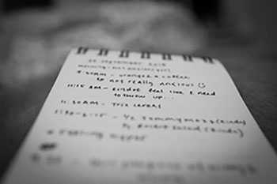
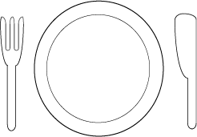

-
The
REAL facts
about Anorexia NervosaA quick overview regarding one of the most common eating disorders
-
WARNING SIGNS
- Severe or sudden weightloss
- Obsession with calories, weight, body image, dieting, etc.
- Food-based restrictions; refusing to eat specific foods; limiting how much food is consumed
- Constant commenting about being or feeling "fat"
- Exercising excessively
- Denying hunger, skipping meals, creating excuses to skip meals
- Acting withdrawn from usual activities
-
SYMPTOMS
- Sudden or gradual change in food intake resulting in excessive or noticable weightloss
- Obsession with body image of the individual and others
- Crippling fear of gaining weight; participating in behavior inclined at preventing weightgain
- Denial of the severity of the situation
-
HEALTH CONSEQUENCES
With Anorexia Nervosa, the body is deinied essential nutrients vital to keep the body functioning properly. Overtime, the body with "slow down" all of its processes in order to conserve energy.
- Slow heart rate and low blood pressure. This increases the risk for heart failure
- Bone density reduction
- Muscle loss and weakness
- Severe dehydration which can result in kidney failure
- Overall weakness; fainting and fatigue
- Dry hair and skin; hair loss is common
- Feeling cold a majority of the time
-
FACTS

- Approximately 90-95% of Anorexia Nervosa sufferers are girls and women
- Between 0.5-1% of American Women suffer from Anorexia Nervosa
- Anorexia Nervosa is one of the most common psychiatric diagnoses in young women
- Between 5-20% of individuals struggling with Anorexia Nervosa will die from it; probabilities of death increase within this range depending on the length of the condition
- Anorexia Nervosa has one of the highest death rates of any mental health condition
- It typically appears in early to mid-adolescence
-
TREATMENT
Anorexia Nervosa needs to be treated as soon as possible in order to prevent as much excessive emotional and physical destruction as possible
- The most effective treatment includes both psychotherapy/counseling coupeled with medical and nutritional attention
- The most common forms of treatment are outpatient therapy, inpatient therapy, and group therapy
- The method of treatment needed varies on an individual basis depending on the severity and duration of the condition
- Inpatient treatment which includes hospitalization or a residential facility becomes necessary when conditions become severe or life-threatening; This way patients can be monitored and coached throughout the entire day
- Therapy may include keeping food logs and trying to target possible contributors which led to the development of the disorder
-
RECOVERY
Recovery is possible and you are worth recovery!
- It doesn't happen over night, it might take years to recover from Anorexia Nervosa therefore patience and aftercare are CRUCIAL
- Do not cut yourself off from your support system no matter how good you may feel; Stay patient and optimistic, you've come so far and you're doing so well
- Recovery is not linear, it is like a roller coaster but like everything else in life, it will get easier
- One of the key components of recovery is establishing and maintaing a positive body image as well as spreading body positivity
If you are or anyone you know is suffering from an eating disorder of any kind, please do not be afraid to seek help. You can also visit www.neda.org for more helpful information!
-
QUIZ